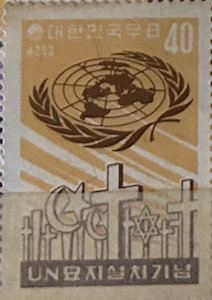
| SOURCE | TITLE| IMAGE MATCH | click to source page |
| eBay | Korea South 316,316a,MNH.Mi 316,Bl.154. UN Memorial Cemetery,Tanggok,1960. | eBay | 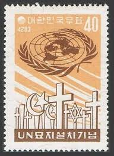 |
| eBay | Korea 1960 ☀ Establishment of U.N. Memorial Cemetery MSS ☀ MNH** | eBay | 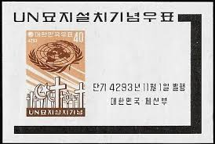 |
| eBay | Korea South 316,316a,MNH.Mi 316,Bl.154. UN Memorial Cemetery,Tanggok,1960. | eBay | 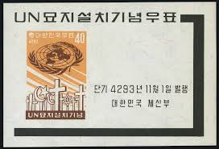 |
| eBay UK | Korea Stamp #316a MNH Souvenir Sheet 1960 | eBay UK | |
| Mystic Stamp Company | 316a - 1960 Korea - Mystic Stamp Company | 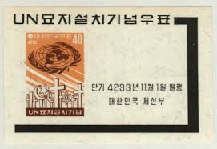 |
| eBay | Korea S Stamp & S/S United Nations Memorial Cemetery 1960 MNH-12 Euro | eBay | 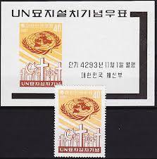 |
| 수집뱅크코리아 | 수집뱅크코리아 - 화폐/우표 성실한 감정 정확한 평가 | 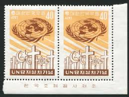 |
| eBay | KOREA LOT OF FIVE SOUVENIR SHEETS MINT NEVER HINGED--SCOTT VALUE $37.00 | eBay | 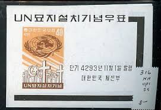 |
| eBay | Korea Stamp #316a MNH Souvenir Sheet 1960 | eBay | 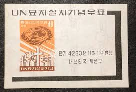 |
| eBay | South Korea - Scott 316 + 316a (UN Memorial Cemetery) MNH | eBay | 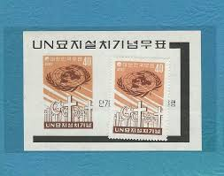 |
| eBay | B865 Korea 1960 Korean War - UN Cemetery MNH | eBay | 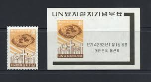 |
| eBay | Korea 316a MNH-XF 1960 UN Memorial Cemetery Tanggok Pusan Korea Souvenir Sheet | eBay | 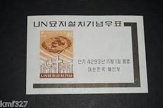 |
| eBay | Korea South 322a,MNH.Michel Bl.160. 10th World Health Day 1961. | eBay | 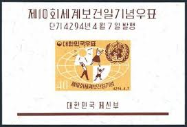 |
| eBay | korea)1960 Sc 316,316a set MNH t2422 | eBay | 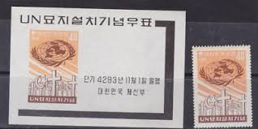 |
| Free stamp catalogue | Stamps from Korea, South - Freestampcatalogue.com - The free online stampcatalogue with over 500.000 stamps listed. | 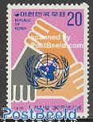 |
| eBay | Korea Stamp 322a MNH UN Topical Full Set Cat $4.00 | eBay | 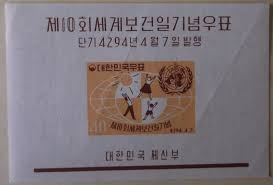 |
| eBay | Set of 10 1961 Korea Stamps # 322A Cat Value $45 10th World Health Day | eBay | 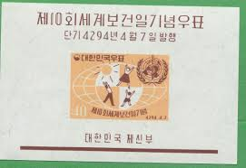 |
| Freestampcatalogue.com | Stamps from Russia - Freestampcatalogue.com - The free online stampcatalogue with over 500.000 stamps listed. | 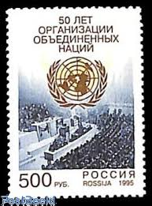 |
| Welcome to korea stamp portal system | 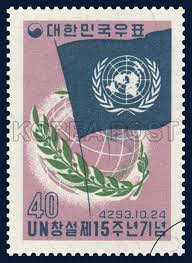 | |
| eBay | Korea South 321, 321a, MNH. Mi 321, Bl.159. 1st World Meteorological Day, 1961. | eBay | 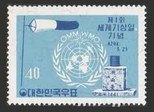 |
| eBay | Korea South 485-486,485a-486a,MNH.Mi 510-511,Bl. Cooperation Year ICY-1965,UN-20 | eBay | 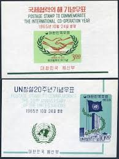 |
| eBay | R1146 Korea 1961 World Health Day 1v. MNH | eBay | 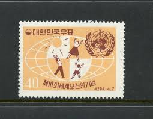 |
| HipStamp | Search "United Nations 1960" / HipStamp | 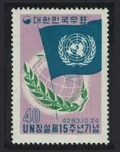 |
| postbeeld.com | Stamp 1966, Mali 20 years UNICEF 1v, 1966 - Collecting Stamps - PostBeeld - Online Stamp Shop - Collecting | 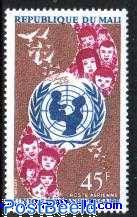 |
| Dreamstime.com | SOUTH KOREA - CIRCA 1955: a Stamp Printed in South Korea Issued for the 10th Anniversary of United Nations Shows Emblem, Circa 195 Editorial Photography - Image of issue, emblem: 155247997 | 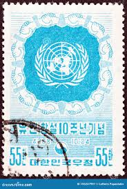 |
| Free stamp catalogue | Stamps with the theme Meteorology - Freestampcatalogue.com - The free online stampcatalogue with over 500.000 stamps listed. | 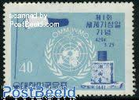 |
| eBay | Japan Stamp, Scott 635 MNH | eBay | 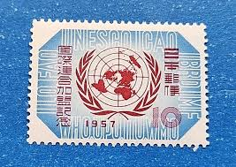 |
| jandrstamps.com | Weather on stamps | JandR Stamps | 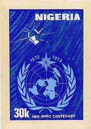 |
| Welcome to korea stamp portal system | 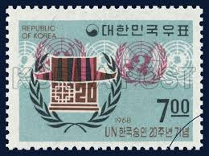 | |
| eBay | SOUTH KOREA SC#231 1955 UN EMBLEM 55 WON XF USED COMMEMORATIVE OLD ANTIQUE STAMP | eBay | 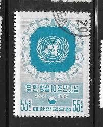 |
| Free stamp catalogue | Stamps with the theme Unicef - Freestampcatalogue.com - The free online stampcatalogue with over 500.000 stamps listed. | 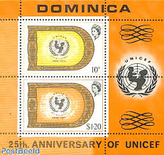 |
| Minnesota Stamp Co | UNNY 1037a Lunar Dragon Single stamp from personalized sheet (unny1037anh) Golden Valley Minnesota Stamp Co | 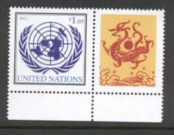 |
| eBay | JAPAN # 635 MNH ADMISSION TO UNITED NATIONS & EMBLEM | eBay | 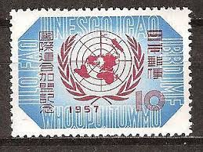 |
| eBay | 1962 FDC Paraguay 150th Annv. of Independence United Nations Cover SC #666-669 | eBay | 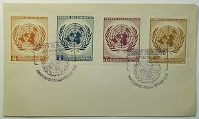 |
| eBay | Maluku Selatan, Indonesia Postage Stamp | eBay | 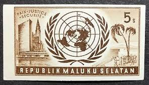 |
| eBay | OOS] UN Vienna #Mi497-Mi501 MNH 2007 Personalized Greetings Essen UNO Emblems | eBay | 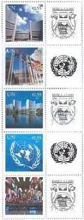 |
| Free stamp catalogue | Stamps from Rhodesia - Freestampcatalogue.com - The free online stampcatalogue with over 500.000 stamps listed. | 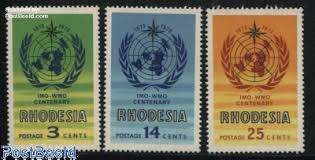 |
| doigsden.com | Doig's Ethiopia Stamp Catalogue - Issues of 1970 to 1979 | 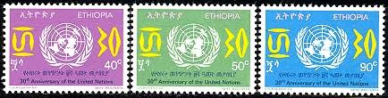 |
| eBay | TOGO SC# 347 - HUMAN RIGHTS 10th. ANNIVERSARY - NH | eBay | 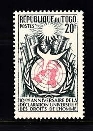 |
| eBay | Switzerland OMM 1973, Centenary WMO set MNH, Mi 10-13 cat 4€ | eBay | 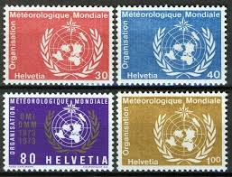 |
| Poshmark | Stamp Collection | Other | United Nations 995 32c 5th Anniversary Stamp Collection | Poshmark | 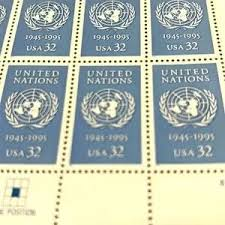 |
| eBay | SOUTH KOREA # 486a Used ANNIVERSARY UNITED NATIONS (2) | eBay | 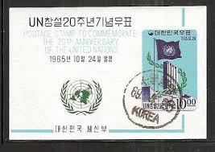 |
| eBay | United Nations Scott C4 Stamp 25c - Block Of 10 - Air Mail 1951 Unused - #A76 | eBay | 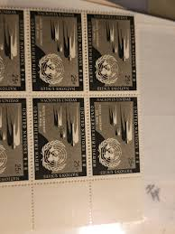 |
| Amazon.in | Buy India 1970 yr United Nations 25th Anniversary Block of 4 Stamps FDC Online at Low Prices in India - Amazon.in | 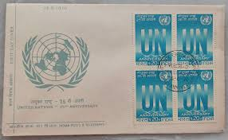 |
| eBay | Korea South 221-222,MNH-gum.Mi 199-200. UN,19th Ann.1955.Emblem,clasped hands. | eBay | 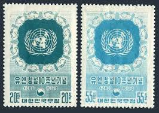 |
| eBay | Korea South 598,598a sheet,MNH.Michel 608,Bl.271. WHO,20th Ann.1968. | eBay | 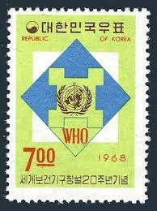 |
| eBay | Korea 1965 Scott #486a MNH OG Souvenir Sheet - Scott 2010 Catalogue Value $3.50! | eBay | 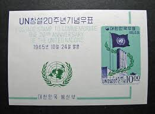 |
| eBay | Dealer Dave UNITED NATIONS Stamps GENEVA 1972 YEAR SET, MNH | eBay | 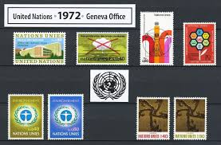 |
| eBay | Historical Events Postage Brazilian Stamps for sale | eBay | 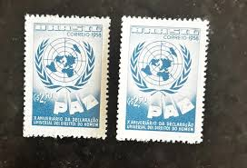 |
| novelteesgifts.com | Clive Feigenbaum Poster Print — Museum-Quality 18"x24" – Noveltees | 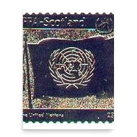 |
| Shutterstock | Switzerland Circa 1973 Stamp Printed By Stock Photo 109116962 | Shutterstock | |
| eBay | KOREA STAMPS SOUVENIR SHEET #486-486a (NH) FROM 1965 | eBay | |
| eBay | Machine Cancel Korean Stamps for sale | eBay | |
| eBay | Korea, Postage Stamp, #485a-486a Used, 1965 United Nations Flag | eBay | |
| Free stamp catalogue | Stamps from United Nations, New York - Freestampcatalogue.com - The free online stampcatalogue with over 500.000 stamps listed. | |
| eBay | SOUTH KOREA 1961 40h MH UN United Nations Mi 321 Scott 321 Yt 250 Sg 388 VF 4749 | eBay | |
| eBay | Korea 1959+ Iimperf Olympics Science Army MNH 4 Stamps Sheets CV €85.00 | eBay | |
| eBay | Q087 Korea 1959 W.H.O. 1v. MNH | eBay | |
| Shutterstock | United Nations New-york Office Circa 1957 Stock Photo 69024754 | Shutterstock |